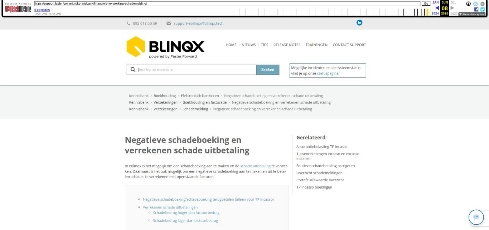

Documenten ordenen met mappenstructuur

Tekstinhoud
Documenten ordenen met mappenstructuur
In een dossier vind je vaak meerdere documenten terug. Sommige documenten hebben maar betrekking op één dossier, maar andere documenten wil je in ieder dossier zien. Voorbeelden hiervan zijn dienstverleningsovereenkomsten en algemene voorwaarden.
Om deze documenten te ordenen, gebruik je de mappenstructuur in een dossier.
Verschillende typen mappen
Blauwe mappen beheren
Hoofdmap Dossier
Map toevoegen
Map hernoemen
Map verplaatsen
Map verwijderen
Standaard indeling in alle (nieuwe) dossiers
Rode en gele mappen beheren
Mappen toevoegen
Map hernoemen
Mappen verwijderen
Documenten in map toevoegen
Blauwe mappen
Rode en gele mappen
Rode mappen en Uwkluis
Toegang afhankelijk van rechten
Verschillende typen mappen
In het tabblad 'Documenten' in een dossier vind je aan de linkerkant een mappenstructuur bestaande uit blauwe, rode en gele mappen.
Dossiermappen (Blauw): deze documenten zijn alleen beschikbaar binnen het betreffende dossier. Hiervoor kan wel een standaard structuur ingesteld worden.
Algemene mappen (Rood): deze mappen én documenten komen terug in alle dossiers in jouw omgeving.
Organisatie mappen (Geel): deze documenten zijn alleen beschikbaar voor personen binnen een bepaald kantoor of personen met het multioffice recht.
Hieronder een voorbeeld van hoe de mappenstructuur eruit kan zien:
Blauwe mappen beheren
De blauwe mappen zijn gelinkt aan dossiers. In een dossier kan je documenten in de blauwe mappen zetten of extra mappen aanmaken. Deze wijzigingen gelden alleen voor dit ene dossier.
Hoofdmap Dossier
De mappen zijn zichtbaar in het dossier – tabblad Documenten. Je hebt hier altijd een 'hoofdmap' en deze heeft als defaultnaam Dossier. Deze map kan je niet verwijderen. Indien gewenst kan je deze map wel hernoemen of je kunt mappen onder deze map aanmaken.
Map toevoegen
Om een map toe te voegen ga je op de map staan waaronder je een map wilt toevoegen en klik je op het hamburgermenu.
Je kiest voor 'Map toevoegen'. Je geeft de map een naam en je slaat op.
Zo kan je onder ieder gewenste map submapjes aanmaken. Belangrijk is dat je op de juiste map gaat staan en dan pas klikt op het hamburgermenu en te kiezen voor map toevoegen.
Map hernoemen
Je kunt de map hernoemen door op de juiste map te gaan te staan en te klikken op het hamburgermenu. Je kiest dan voor 'Map hernoemen'. Je past de naam aan en slaat op.
Map verplaatsen
Het is niet mogelijk om mappen te verplaatsen. Je kunt dus niet een submap naar een andere map verschuiven. Of bijvoorbeeld van een submap een hoofdmap maken. Dit zal je handmatig moeten aanpassen door nieuwe mappen aan te maken en de 'foutieve' map te verwijderen
Map verwijderen
Je kunt een map verwijderen als hier geen documenten meer in staan. De map moet dus leeg zijn. Is de map leeg dan kan je klikken op het hamburgermenu en kiezen voor Map verwijderen.
Standaard indeling in alle (nieuwe) dossiers
Indien gewenst is het mogelijk om voor de blauwe mappen een standaard mappenstructuur in te stellen voor ieder dossier. Hiervoor dien je een voorbeelddossier aan te maken. Gebruik hiervoor bijvoorbeeld een testdossier. Geef vervolgens het dossiernummer door aan support door een e-mail te sturen naar support-eblinqx@blinqx.tech. Als jij dan vervolgens in dit voorbeelddossier aanpassingen doet (blauwe mappen verwijderen of toevoegen) dan wordt deze mappenstructuur automatisch aangepast in alle dossiers die nieuw aangemaakt worden.
Let op! Deze wijziging geldt niet met terugwerkende kracht, maar is alleen geldig op de nieuwe dossiers die worden aangemaakt ná de wijzigingen.
Rode en gele mappen beheren
De mappenstructuur voor de rode en gele mappen beheer je via Beheer -Bestanden – Verkenner. Deze is ook te vinden via het Dashboard:
Deze optie opent een pagina die dezelfde structuur laat zien als onder het documenten tabblad in het dossier.
Mappen toevoegen
Klik op een map waaronder je de nieuwe map wilt toevoegen. Klik op de ➕ knop om een map hieronder toe te voegen.
Map hernoemen
Klik op de map die je wilt hernoemen en vervolgens op het wijzigingsicoon (potloodje). Pas de naam aan en klik op het opslaanicoon.
Mappen verwijderen
Wanneer je een map wilt verwijderen, dient deze géén documenten te bevatten. De documenten verwijder je uit de mappen door middel van het rode kruisje. Klik op de map die je wilt verwijderen. Vervolgens zie je boven de mappenstructuur diverse tekens verschijnen. Klik hier op het rode mapje om de map te verwijderen.
Documenten in map toevoegen
Blauwe mappen
Zoals eerder aangegeven zijn de blauwe mappen gelinkt aan het dossier. Wil je een document toevoegen aan een blauwe map dan ga je naar het betreffende dossier – tabblad Documenten. Links zie je de blauwe mappen staan. Je klikt de map aan waar je een document aan wilt toevoegen en klikt op de knop 'Document toevoegen'.
Rode en gele mappen
Aan de rode en gele mappen voeg je een document toe via Beheer – Bestanden – Verkenner. Indien je een document in een map wilt toevoegen, klik je op de map. Klik vervolgens linksboven op het ➕ icoon om een document toe te voegen.
Rode mappen en Uwkluis
Achter het document staat een aan/uit-button. Met deze button kan je aangeven of het document getoond moet worden in Uwkluis. Zet je het document op publiek (de knop is dan oranje) dan ziet iedere Uwkluisgebruiker het document in Uwkluis. Let op: documenten die op publiek staan kan je niet verwijderen.
Ook kan je een einddatum geven aan een document. Dit door op het wijzigingsicoon achter het document te klikken. Is de einddatum verstreken dan is het document niet meer zichtbaar in de Uwkluis die na deze einddatum zijn aangemaakt. In de Uwkluis die al actief zijn voor deze einddatum blijft het document wel zichtbaar mits deze op publiek staat. Let op: voor het werken met de einddatum moet een proces aangezet worden. Wil je hiervan gebruik maken stuur dan een e-mail naar support-eblinqx@blinqx.tech.
Toegang afhankelijk van rechten
De mappen die zichtbaar zijn is afhankelijk van de ingestelde rechten. Zo ziet iemand met rechten over meerdere kantoren (multioffice) ook alle (gele) mappen van de desbetreffende kantoren.
Terwijl iemand zonder dit recht alleen het kantoor ziet waar hij/zij aan is gekoppeld.
Laatste update: 15 oktober 2025
Was deze informatie nuttig?
Ja Nee